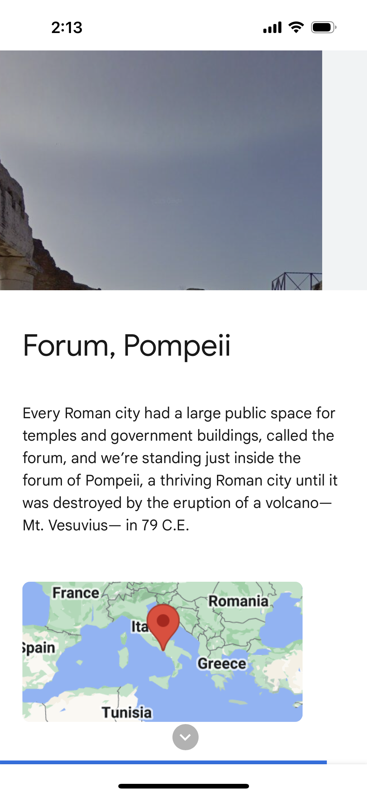
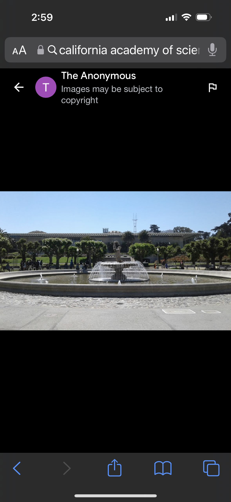
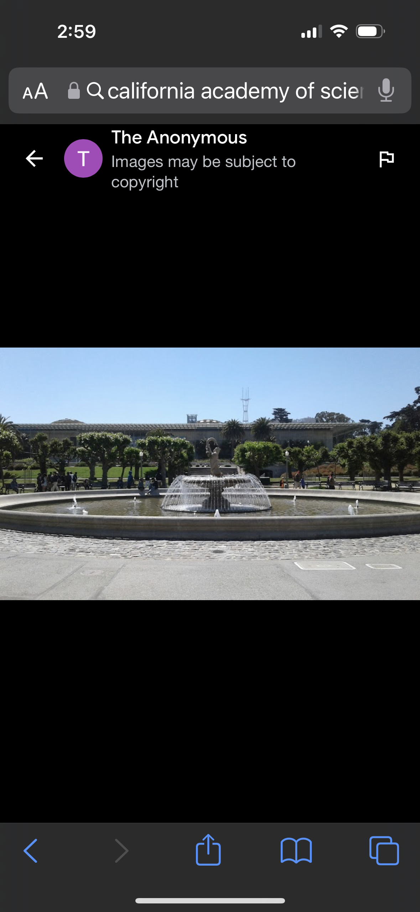

Google Arts & Culture
The overall user experience of these Arts & Culture stories is that it is easy to follow and all the information of the different places flows nicely into one another. The interface design utilizes visuals in the form of photos, Google Street Views, maps, and icons. The interaction design for the user is in a scroll format and can be automatic through caret icon buttons. There is also the ability to virtually explore the location through the Street Views.

 
